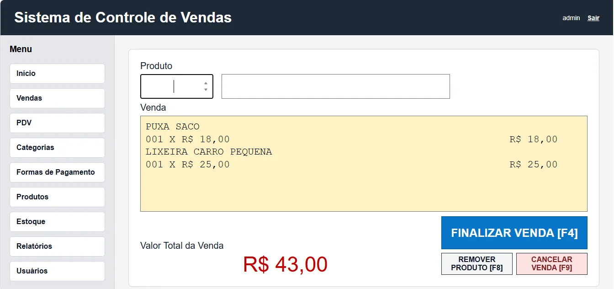

Sistema de vendas e estoque de uma loja beneficente
Um sistema de ponto de venda e estoque que as voluntárias da loja do IEFA usam em todo dia de funcionamento, feito por uma equipe de oito alunos da UNIVESP.
Minha parte: Participei de todas as etapas com a equipe: a contagem do estoque e o cadastro dos produtos, os modelos em Django e o banco MySQL, o ponto de venda, os relatórios e as etiquetas, a instalação no computador da loja e o acompanhamento das voluntárias, incluindo a correção das saídas de estoque.
Código da equipe, não público
100%das funcionalidades previstas entregues; em uso em todo dia de funcionamento da loja desde cerca de julho de 2026

- Decisão que apoia
- Quanto foi vendido, por qual forma de pagamento, e o que há no estoque.
- Quem usa
- Voluntárias e coordenação de uma loja beneficente.
- Quanto custa errar
- Preço errado no caixa e estoque sem controle viram dinheiro perdido e prestação de contas difícil.
- Como gera valor
- A venda pelo código de barras baixa o estoque sozinha e o relatório por forma de pagamento fecha o dia; os relatos de preço errado pararam.
- Riscos e limites
- Login compartilhado e testes manuais; não há controle de caixa com abertura e fechamento.
Problema
A loja do Instituto Educacional Francisco de Assis, em São José do Rio Preto, registrava as vendas em papel e cadernos e não tinha controle de estoque estruturado. Nem todo produto tinha o preço identificado, o que gerava preço errado no caixa.
Solução
Um sistema em Django e MySQL com ponto de venda por código de barras, produtos, movimentações de estoque, formas de pagamento, usuários e relatórios de vendas, instalado como serviço no computador Windows da loja. Cada venda gera a saída de estoque sozinha, e a entrada de mercadoria imprime as etiquetas.
Como funciona
- A equipe contou o estoque inteiro, cadastrou todos os produtos e imprimiu as etiquetas antes de entrar em produção.
- Acompanhar as voluntárias usando trouxe funções que ninguém tinha pedido: remover item, cancelar venda, estoque inicial no cadastro do produto e pesquisa em todas as listas.
- Um defeito nas saídas de estoque das vendas foi corrigido no código e as movimentações que faltavam foram regularizadas com um script SQL.
Resultados
| 0 | relatos de preço errado ou produto sem preço desde a adoção das etiquetas com código de barras |
| 9 | módulos em produção: vendas, PDV, estoque, produtos, categorias, pagamentos, usuários, relatórios e etiquetas |
| 2 | relatórios usados na rotina das voluntárias: vendas por forma de pagamento e impressão de etiquetas |
Limites
Os resultados são observados, não medidos: não há contagem de erros antes e depois. Os testes são manuais, e as voluntárias usam um login comum, então as ações não são rastreáveis por pessoa. O código é da equipe e não é público.
Stack
Python, Django, MySQL, Waitress, WhiteNoise, NSSM